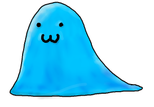

事業内容
導入事例
企業情報
企業情報
みょん式会社スライムカンパニーは2000年に設立され、スライムならではの高度な柔軟性と個体数の多さを活かし、スライム派遣やエンタメ事業などの多岐にわたるサービスを展開しています。
※この文章は
NTTコミュニケーションズ株式会社の会社案内
のパロディです。
社長ごあいさつ

このページにたどり着きし人の子よ。私の言葉を聞くが良い。
私は数多のスライムを従え、スライムの頂点に立ちし者。 みょん式会社スライムカンパニー社長、ＳＲＭだ。怪しい者ではないし、この会社も怪しくない。
みょん式会社スライムカンパニー、それはこの緑と青の星において希少価値である「スライム」という特性を活かしつつ、 その愛くるしさをもってこの星を支配することを目的とした会社である。 当面の目標は、この星のありとあらゆる場所にスライムを配置し、必要に応じて武器にも盾にもなることである。
スライムはいつでも皆を見守っている。画面の前の貴方のことも…。